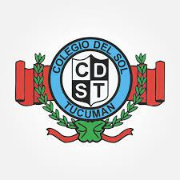

 
 <div class="container-fluid">

    <div class="card shadow mb-4">
        <div class="card-header py-3">
            <h6 class="m-0 font-weight-bold text-primary">Educación - Formación Académica</h6>
        </div>
        <div class="card-body">
            <div class="table-responsive">
                <table class="table table-bordered" id="dataTable" width="100%" cellspacing="0">
                    <thead>
                        <tr>
                            <th>Institución</th>
                            <th>Nivel</th>
                            <th>Titulo</th>
                            <th>Periodo</th>                            
                            <th>Estado</th>
                            <th>Logo</th>
                        </tr>
                    </thead>                    
                    <tbody>
                        <tr>
                            <td>Universidad Nacional de Tucumán - Facultad de Ciencias Exactas y Tecnología</td>
                            <td>Universitario</td>
                            <td>Ingenieria en Computación</td>
                            <td>2002 - a la fecha</td>
                            <td>Incompleto</td>
                            <td></td>
                        </tr>        
                        <tr>
                            <td>Ministerio de Desarrollo Productivo, la Cámara de la Industria Argentina del Software (CESSI) y el Instituto Nacional de Tecnología Industrial (INTI)</td>
                            <td>Universitario</td>
                            <td>Certificación Argentina Programa "YoProgramo 2da edición"</td>
                            <td>2022 - a la fecha</td>
                            <td>Incompleto</td>
                            <td></td>
                        </tr>   
                        <tr>
                            <td>Mumuki</td>
                            <td>Curso</td>
                            <td>Certificación Argentina Programa "Sé Programar"</td>
                            <td>2021</td>
                            <td>Aprobado</td>
                            <td></td>
                        </tr> 
                        <tr>
                            <td>Centro de Educación a Distancia e Investigación en Tecnologías Educativas (CEDITE)</td>
                            <td>Curso</td>
                            <td>Herramientas para la Gestión de Aulas virtuales</td>
                            <td>2020</td>
                            <td>Aprobado</td>
                            <td></td>
                        </tr>                 
                        <tr>
                            <td>Grupo UNT OSUM y la Cátedra de Ingeniería de Software de la Carrera de Ingeniería en Computación</td>
                            <td>Curso</td>
                            <td>Preparación para Certificación JAVA (SCJP)</td>
                            <td>2009</td>
                            <td>Aprobado</td>
                            <td></td>
                        </tr>
                        <tr>
                            <td>Facultad de Ciencias Exactas y Tecnología de la U.N.T.</td>
                            <td>Curso</td>
                            <td>Administración de GNU / LINUX</td>
                            <td>2005</td>
                            <td>Aprobado</td>
                            <td></td>
                        </tr>
                        <tr>
                            <td>Colegio del Sol - Tucumán</td>
                            <td>Secundario</td>
                            <td>Especialista en Informatica</td>
                            <td>1997 - 2001</td>
                            <td>Aprobado</td>
                            <td></td>
                        </tr>
                        
                    </tbody>
                </table>
            </div>
        </div>
    </div>
</div>